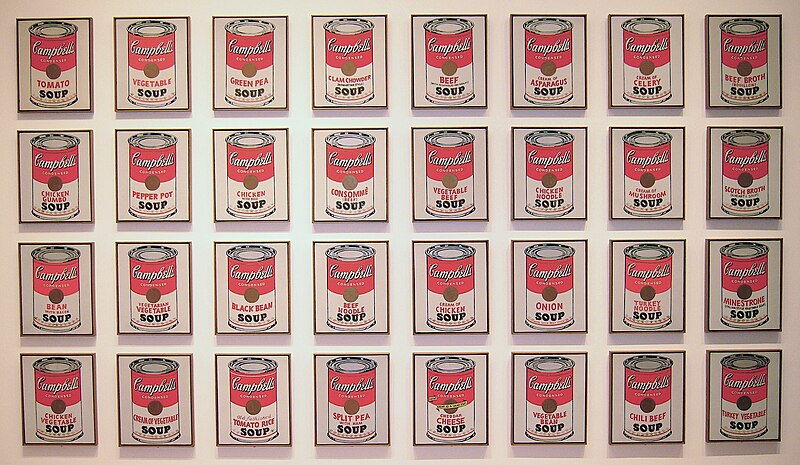
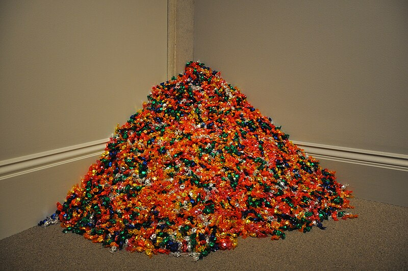
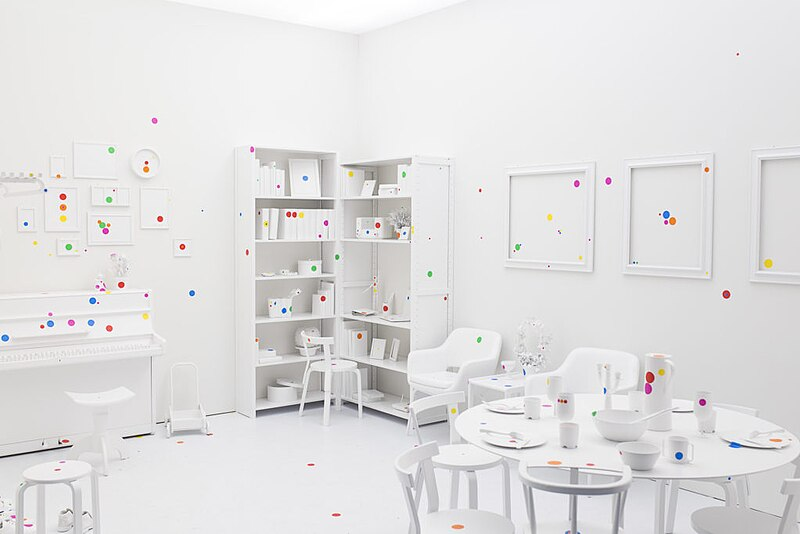

Meesterwerk: Campbell's Soup Cans
Andy Warhol, 1962

POSTMODERNISME (1960-heden)
Tijdsgeest Context
Politiek Perspectief
Het Postmodernisme ontstond in een periode van radicale politieke en sociale omwentelingen. De jaren '60 brachten de protestbewegingen tegen de Vietnamoorlog, de burgerrechtenbeweging in de VS, de studentenopstanden van 1968, en de opkomst van het feminisme en milieuactivisme. De gevestigde orde — politiek, cultureel, epistemologisch — werd overal ter wereld in twijfel getrokken.De val van het communisme (1989-1991) en het einde van de Koude Oorlog veranderden het geopolitieke landschap fundamenteel. Het "einde van de geschiedenis" werd afgekondigd, maar tegelijkertijd ontstonden nieuwe conflicten: de opkomst van het terrorisme, de culturele clash tussen het Westen en de islamitische wereld, en de economische ongelijkheid die door globalisering werd versterkt.
Historisch Perspectief
De postindustriële samenleving — beschreven door sociologen als Daniel Bell — vervangt productie door informatie als hoofdbron van rijkdom. De computerrevolutie, het internet, en sociale media transformeren niet alleen de economie maar ook de menselijke ervaring van tijd, ruimte, en identiteit.De ecologische crisis wordt een centraal thema. Het besef dat de mensheid het klimaat en het milieu op onomkeerbare wijze aantast, ondermijnt het modernistische geloof in vooruitgang en menselijke meesterschap over de natuur.
Literair Perspectief
De postmoderne literatuur breekt met traditionele narratieve structuren. Autoren als Thomas Pynchon ("Gravity's Rainbow", 1973), Don DeLillo ("White Noise", 1985), en Umberto Eco ("De Naam van de Roos", 1980) creëren werken die metafictief zijn, intertekstueel, en vol verwijzingen naar populaire cultuur.De "death of the author" (Roland Barthes) en de "deconstruction" (Jacques Derrida) ondermijnen het idee van een enkele, stabiele betekenis. Teksten zijn netwerken van verwijzingen zonder oorsprong of eindpunt.
Filosofisch Perspectief
Het Postmodernisme is geworteld in het poststructuralisme van Foucault, Derrida, Deleuze, en Baudrillard. Centrale concepten zijn:Het "grote verhaal" van de moderniteit — vooruitgang, emancipatie, universalisme — wordt afgewezen als totalitair. In plaats daarvan komt er aandacht voor "kleine verhalen", lokale narratieven, en identiteitspolitiek.
Psychologisch Perspectief
Het postmoderne subject is gefragmenteerd en gelaagd. Identiteit is niet langer stabiel of essentieel, maar een performance — iets dat wordt gedaan, niet iets dat men is. Dit wordt zichtbaar in:Het postmoderne subject lijdt aan "keuzestress" in een overvloed aan mogelijkheden, en aan nostalgie voor een verloren authenticiteit die nooit heeft bestaan.
---
Stijlfiguren en Thema's
Kenmerkende Vormen
Het Postmodernisme kenmerkt zich door pastiche — het imiteren en combineren van eerdere stijlen zonder ironische afstand. De grens tussen "hoog" en "laag" cultuur wordt opgeheven: Andy Warhol's Campbell's soupblikjes staan naast Da Vinci, remixcultuur en sampling zijn artistieke praktijken geworden.Brutalisme in de architectuur toont ruwe materialen (beton, staal) zonder versiering. Deconstructivisme (Frank Gehry, Zaha Hadid) breekt met traditionele geometrie en creërt gebouwen die lijken te bewegen en te vervormen.
🔗 Tijdsgeest Connecties
Psychologie: Identiteit als performance - Gender Trouble (Judith Butler) en deconstructie van het zelf
Politiek: Post-koloniale theorie - de grenzen van het Westen worden problematisch
Filosofie: Derrida's deconstructie - geen vaste betekenis, alleen oneindige verwijzing
Historie: Einde van de Koude Oorlog - oude hiërarchieën vallen uiteen, nieuwe onzekerheid
Kleurenpalet
Het postmoderne palet is eclectisch: er zijn geen verboden kleuren of combinaties. Neonkleuren uit de jaren '80, pastel uit de jaren '90, of "millennial pink" — alles is mogelijk en wordt door elkaar gebruikt.Het monochroom (all-over een kleur) is een reactie op de informatie-overload: minimalisme als tegenhanger van het visuele lawaai.
🔗 Tijdsgeest Connecties
Psychologie: Overstimulatie en keuzestress - de behoefte aan zowel explosie als kalmte
Politiek: Multiculturalisme - alle kleuren en culturen mogen naast elkaar bestaan
Filosofie: Relativisme - er is geen "juiste" kleur, alleen voorkeur en context
Historie: Digitale kleurtechnologie - computers maken elke kleur mogelijk en reproduceerbaar
Technieken
Collage en assemblage zijn basistechnieken: het combineren van gevonden objecten, foto's, en teksten tot nieuwe werken. Digitale kunst, video-installaties, en performance zijn legitiem geworden.Het atelier verdwijnt; de kunstenaar wordt een curator van beelden en concepten. De hand van de meester telt niet meer; het idee (het "concept") is belangrijker dan de uitvoering.
🔗 Tijdsgeest Connecties
Psychologie: De "prosumer" die eigen identiteit samenstelt - curator van eigen leven
Politiek: Participatieve cultuur - iedereen kan content creëren en delen
Filosofie: Foucault's auteurschap - de "dood van de auteur" (Barthes) wordt praktijk
Historie: Internet en digitale media - remix, sampling, mashup als standaard
Centrale Thema's
1. Ironie en cynisme - niets is echt, alles is een grap 2. Nostalgie - verlangen naar een verloren authenticiteit 3. Consumptiecultuur - kritiek en viering tegelijk 4. Identiteit en representatie - wie mag wie vertegenwoordigen? 5. Globalisering - lokale versus universele cultuur 6. Ecologie en duurzaamheid - de grenzen van groei🔗 Tijdsgeest Connecties
Psychologie: Keuzestress en het verlies van het zelf in digitale spiegelwerelden
Politiek: Identiteitspolitiek - representatie en de vraag wie mag spreken
Filosofie: Lyotard's "la condition postmoderne" - einde van de "grote verhalen"
Historie: Globalisering en klimaatcrisis - grenzen van groei worden zichtbaar
---
De Tien Meest Invloedrijke Werken
1. "Campbell's Soup Cans" (1962) — Andy Warhol
Museum of Modern Art, New York | Zeefdruk op canvas
Achtergrond
Warhol schilderde 32 verschillende soorten Campbell's soep, exact nagemaakt van de commerciële verpakking. Het werk was een provocatie: waarom is dit kunst terwijl de verpakking in de supermarkt dat niet is?
Warhol's Factory produceerde kunst als een industriële fabriek, met assistenten die de werken maakten volgens zijn instructies. De hand van de kunstenaar was irrelevant — het idee was alles.
Tijdsgeest Vertaling
Dit werk vraagt: wat is de waarde van kunst in een consumptiemaatschappij? Is uniciteit nog relevant als alles gereproduceerd kan worden? Warhol's antwoord is zowel een viering als een aanklacht van de massacultuur.
Stijlanalyse
De compositie is een grid — de supermarkt als esthetisch model. De kleuren zijn commercieel rood en wit. De techniek (zeefdruk) introduceert "fouten" die de mechanische productie zichtbaar maken.
---
2. "Untitled (I shop therefore I am)" (1987) — Barbara Kruger
Verschillende collecties | Fotografie met tekst overlay
🖼️ Afbeelding niet beschikbaar op Wikimedia Commons
Untitled (I shop therefore I am) (1987) — Barbara Kruger
Achtergrond
Kruger's werk combineert zwart-wit foto's met agressieve tekst in Futura Bold Oblique. "I shop therefore I am" is een parodie op Descartes' "Cogito ergo sum" — identiteit wordt gedefinieerd door consumptie, niet door denken.
Kruger's achtergrond in grafisch ontwerp en reclame is zichtbaar in haar stijl. Ze draait de commerciële esthetiek tegen zichzelf in: de agressieve kleuren en letters zijn reclame, maar de boodschap is kritisch.
Tijdsgeest Vertaling
Dit is feministische kunst die de verhouding tussen gender en consumptie onderzoekt. Vrouwen zijn het doelwit van marketing; hun identiteit wordt gevormd door wat ze kopen. Kruger maakt dit mechanisme zichtbaar.
Stijlanalyse
De compositie is direct en agressief: rood, zwart, wit. De tekst domineert de beelden. Dit is propaganda-achtige kunst die de taal van de vijand (reclame) gebruikt.
---
3. "The Physical Impossibility of Death in the Mind of Someone Living" (1991) — Damien Hirst
Privécollectie | Tijgerhaai in formaldehyde

Achtergrond
Hirst's meesterwerk van "Britart" toont een dode haai opgehangen in een tank van formaldehyde. Het werk werd gekocht door Charles Saatchi voor £50.000 en later door hedgefonds-manager Steve Cohen voor een vermoedelijk veel hoger bedrag.
Het werk is een meditatie over dood en authenticiteit. De haai is vervangen (de originele begon te vergaan), waardoor de vraag ontstaat: is het nog steeds hetzelfde werk?
Tijdsgeest Vertaling
Dit is kunst als spectakel en investering. De schokwaarde en de media-aandacht zijn onderdeel van het werk. Het toont de verhouding tussen kunst, geld, en dood in de postmoderne samenleving.
Stijlanalyse
De compositie is minimalistisch: de tank is een rechthoek, de haai een lijn. De kleur is groen-grijs, medisch en onheilspellend. De titel is filosofisch en literair — dit is conceptuele kunst.
---
4. "Untitled (Portrait of Ross in L.A.)" (1991) — Félix González-Torres
Art Institute of Chicago | Stapel snoepjes, ideaal gewicht 175 lbs

Achtergrond
González-Torres' werk is een portret van zijn partner Ross Laycock, die stierf aan AIDS. De stapel snoepjes weegt 175 pond — Ross' ideale gewicht. Bezoekers mogen snoepjes meenemen; de stapel wordt aangevuld maar krimpt symbolisch.
Het werk is een meditatie over verlies, liefde, en de tijdelijkheid van het leven. Het is ook politiek: een statement over de AIDS-crisis die door de overheid werd genegeerd.
Tijdsgeest Vertaling
Dit is kunst als participatie en verdwijning. De snoepjes vertegenwoordigen zowel leven (zoet, begeerd) als dood (verdwijnend). Het werk is een herinnering aan de verloren generatie van de AIDS-epidemie.
Stijlanalyse
De compositie is een hoek van de galerij met een stapel glanzende snoepjes. De kleuren zijn fel en commercieel. Het werk verandert constant door de interactie met het publiek — dit is proces-kunst.
---
5. "My Bed" (1998) — Tracey Emin
Tate Britain, Londen | Installatie met bed, lakens, en persoonlijke voorwerpen

Achtergrond
Emin's werk toont haar eigen bed na een periode van depressie en alcoholmisbruik — met vieze lakens, gebruikte tampons, lege flessen, en sigarettenpeuken. Het is een extreem persoonlijke, quasi-confessionele kunst.
Het werk veroorzaakte schandalen en discussies. Is dit kunst of expositie? Emin's antwoord: het is allebei. Het persoonlijke is politiek; het privé is publiek.
Tijdsgeest Vertaling
Dit is kunst als autobiografie en therapie. Emin maakt haar kwetsbaarheid publiek, en daagt de toeschouwer uit om mee te kijken. Het is een afwijzing van de koele afstandelijkheid van het minimalisme.
Stijlanalyse
De compositie is chaotisch en intiem. De kleuren zijn aardachtig en vuil. Het bed — symbool van intimiteit en rust — wordt onthuld als een plek van ellende. Dit is "abject art".
---
6. "The Clock" (2010) — Christian Marclay
Verschillende locaties | 24-uur video-installatie
🖼️ Afbeelding niet beschikbaar op Wikimedia Commons
The Clock (2010) — Christian Marclay
Achtergrond
Marclay's meesterwerk is een montage van duizenden filmfragmenten waarin klokken of tijd voorkomen. De installatie duurt exact 24 uur en loopt synchroon met de echte tijd. Het is een monument van het found footage en de remixcultuur.
Het werk is een meditatie over tijd, cinema, en het alledaagse. Het toont hoe de tijd in films wordt gerepresenteerd, en hoe cinema onze ervaring van tijd heeft gevormd.
Tijdsgeest Vertaling
Dit is postmoderne kunst als archief en database. Marclay curateert bestaand materiaal tot iets nieuws. Het werk is ook een commentaar op onze obsessie met tijd en productiviteit.
Stijlanalyse
De compositie is een rechthoekig scherm dat de galerij domineert. De beelden veranderen elke minuut, soms vloeiend, soms abrupt. Het is een "tijdmachine" die door de geschiedenis van de cinema reist.
---
8. "Girl with a Balloon" (2002/2018) — Banksy
Straatkunst / privécollectie | Sjabloon en verf op muur / canvas

Achtergrond
Banksy's werk toont een meisje dat haar hartvormige ballon laat vliegen. In 2018 werd een versie op canvas verkocht bij Sotheby's voor £1.04 miljoen — en vernietigde zichzelf deels door een ingebouwde shredder.
Het werk is straatkunst die de galerijwereld binnendringt. Banksy's anonimiteit en zijn politieke boodschappen — anti-kapitalisme, anti-oorlog — maken hem tot een cultfiguur.
Tijdsgeest Vertaling
Dit is kunst als provocatie en media-event. De "vernietiging" van het werk maakte het alleen maar waardevoller. Banksy speelt met de regels van de kunstmarkt en de aandachtseconomie.
Stijlanalyse
De stijl is herkenbaar Banksy: zwart-wit silhouet met een accent van kleur (het rode hart). De compositie is eenvoudig en direct. De boodschap is nostalgisch en melancholisch — verlies van onschuld.
---
9. "Infinity Mirror Rooms" (1965-heden) — Yayoi Kusama
Verschillende locaties | Installatie met spiegels en LED-lichten

Achtergrond
Kusama's oneindige spiegelkamers creëren een illusie van oneindige ruimte door herhaling en reflectie. De bezoeker wordt ondergedompeld in een universum van licht dat lijkt te bestaan uit oneindig veel sterren.
Kusama's werk wordt vaak geassocieerd met psychedelische ervaringen en mentale gezondheid (ze woont sinds de jaren '70 vrijwillig in een psychiatrische instelling). Maar het is ook een serieuze onderzoek naar perceptie en oneindigheid.
Tijdsgeest Vertaling
Dit is kunst als immersive ervaring en selfie-achtergrond. De kamers zijn ontworpen om te worden gefotografeerd en gedeeld op sociale media. Tegelijkertijd is het een meditatie over de individualiteit in een oneindig universum.
Stijlanalyse
De ruimte is een kamer met spiegelwanden en -plafonds. LED-lichten hangen als kettingen. De reflectie creëert een oneindig patroon. De ervaring is zowel claustrofobisch als transcendent.
---
10. "The Weather Project" (2003) — Olafur Eliasson
Tate Modern, Londen | Installatie met monofrequente lampen, spiegel, en mist

Achtergrond
Eliasson transformeerde de Turbine Hall van Tate Modern in een kunstmatige zonsondergang. Een halve cirkel van gele lampen werd weerspiegeld in het plafond, creërend een volledige zon. Mistmachines verzachten het licht.
Het werk trok miljoenen bezoekers. Mensen lagen op de vloer om de "zon" te bekijken, alsof ze aan het strand lagen. Het was een collective ervaring van verwondering.
Tijdsgeest Vertaling
Dit is kunst als klimaatstatement en publiek ritueel. Eliasson maakt natuurlijke fenomenen binnen bereik van de stedelijke bezoeker. Het werk is ook een waarschuwing: dit is de enige zon die we hebben.
Stijlanalyse
De compositie is een grote hal gevuld met goudgeel licht. De spiegel reflecteert de bezoekers, die deel worden van het werk. De mist dematerialiseert de ruimte. Dit is sublime ervaring in een industriële context.